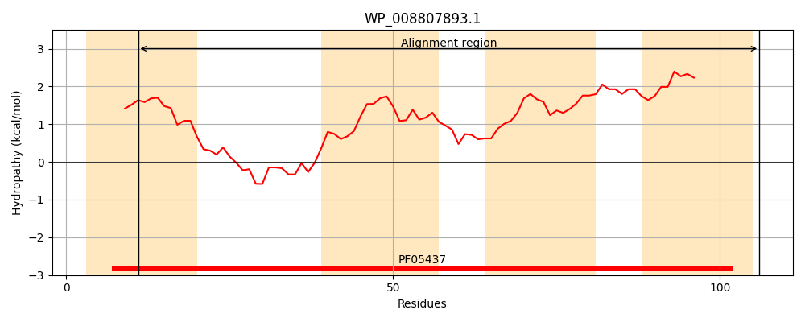
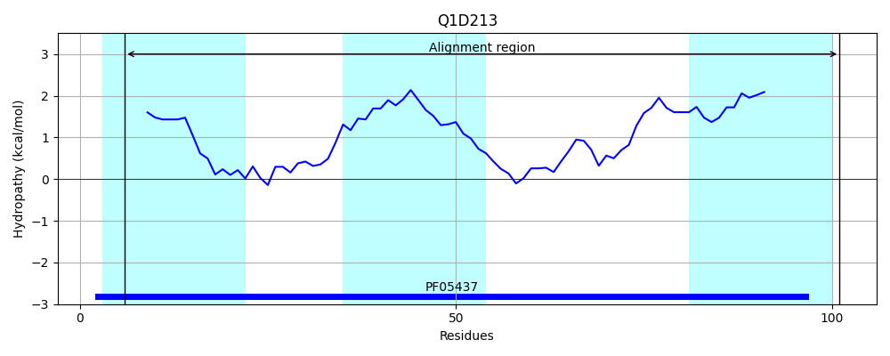
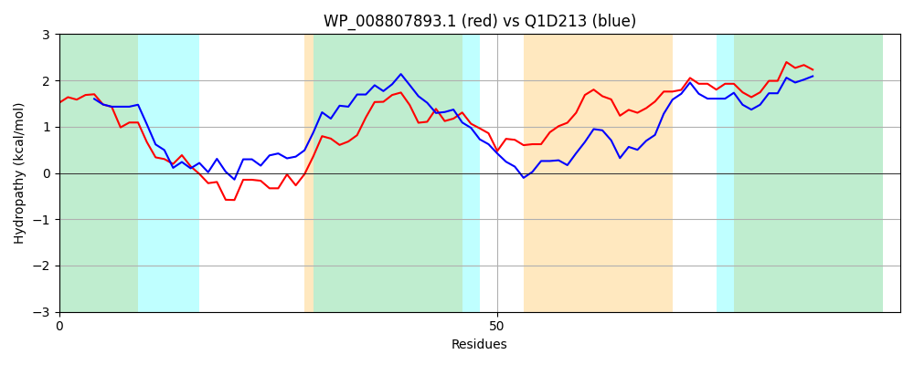

Hit Accession: Q1D213
Hit TCID: 2.A.78.2.3
Hit Description: gnl|BL_ORD_ID|12895 gnl|TC-DB|Q1D213|2.A.78.2.3 Putative uncharacterized protein OS=Myxococcus xanthus (strain DK 1622) GN=MXAN_5157 PE=4 SV=1
Mach Len: 96
e:0.000000
Query TMS Count : 4
Hit TMS Count: 3
TMS-Overlap Score: 2.450000
Predicted Substrates:CHEBI:22918;branched-chain amino acid
BLAST Alignment:
| Protein Hydropathy Plots: | |
|---|---|
|  |  |
Pairwise Alignment-Hydropathy Plot: | |
|  | |